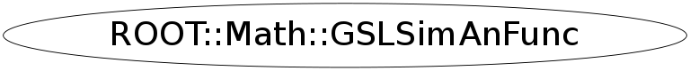

class ROOT::Math::GSLSimAnFunc
GSLSimAnFunc class description. Interface class for the objetive function to be used in simulated annealing If user wants to re-implement some of the methods (like the one defining the metric) which are used by the the simulated annealing algorithm must build a user derived class. NOTE: Derived classes must re-implement the assignment and copy constructor to call them of the parent class @ingroup MultiMin
Function Members (Methods)
public:
| virtual | ~GSLSimAnFunc() |
| virtual ROOT::Math::GSLSimAnFunc* | Clone() const |
| virtual double | Distance(const ROOT::Math::GSLSimAnFunc& func) const |
| virtual double | Energy() const |
| virtual ROOT::Math::GSLSimAnFunc& | FastCopy(const ROOT::Math::GSLSimAnFunc& f) |
| ROOT::Math::GSLSimAnFunc | GSLSimAnFunc(const ROOT::Math::GSLSimAnFunc&) |
| ROOT::Math::GSLSimAnFunc | GSLSimAnFunc(const ROOT::Math::IMultiGenFunction& func, const double* x) |
| ROOT::Math::GSLSimAnFunc | GSLSimAnFunc(const ROOT::Math::IMultiGenFunction& func, const double* x, const double* scale) |
| unsigned int | NDim() const |
| virtual void | Print() |
| double | Scale(unsigned int i) const |
| void | SetX(const double* x) |
| void | SetX(unsigned int i, double x) |
| virtual void | Step(const ROOT::Math::GSLRandomEngine& r, double maxstep) |
| const vector<double>& | X() const |
| double | X(unsigned int i) const |
protected:
| ROOT::Math::GSLSimAnFunc | GSLSimAnFunc() |
Data Members
private:
| const ROOT::Math::IMultiGenFunction* | fFunc | |
| vector<double> | fScale | |
| vector<double> | fX |
Class Charts
{kind=link}
{kind=link}
{kind=link}
{kind=link}

Function documentation
GSLSimAnFunc(const ROOT::Math::IMultiGenFunction& func, const double* x)
construct from an interface of a multi-dimensional function
GSLSimAnFunc(const ROOT::Math::IMultiGenFunction& func, const double* x, const double* scale)
construct from an interface of a multi-dimensional function
Use optionally a scale factor (for each coordinate) which can be used to scale the step sizes
(this is used for example by the minimization algorithm)
GSLSimAnFunc & FastCopy(const ROOT::Math::GSLSimAnFunc& f)
fast copy method called by GSL simuated annealing internally
copy only the things which have been changed
must be re-implemented by derived classes if needed
GSLSimAnFunc * Clone() const
clone method. Needs to be re-implemented by the derived classes for deep copying
return new GSLSimAnFunc(const ROOT::Math::GSLSimAnFunc& )
double Energy() const
evaluate the energy ( objective function value)
re-implement by derived classes if needed to be modified
void Step(const ROOT::Math::GSLRandomEngine& r, double maxstep)
change the x[i] value using a random value urndm generated between [0,1]
up to a maximum value maxstep
re-implement by derived classes if needed to be modified
double Distance(const ROOT::Math::GSLSimAnFunc& func) const
calculate the distance (metric) between this one and another configuration
Presently a cartesian metric is used.
re-implement by derived classes if needed to be modified
void Print()
print the position in the standard output ostream
GSL prints in addition n iteration, n function calls, temperature and energy
re-implement by derived classes if necessary
void SetX(unsigned int i, double x)